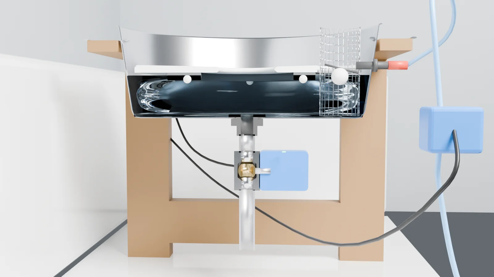

Bottom line
Build the prototype as a standalone rig that sits in the bathtub. It's a 20 qt stainless brazier pan with a 3/4" drain in the bottom, a floating HDPE disc so Kong can only drink from the center, a float valve to refill it, and two motorized ball valves run by one of your spare ESP32s.
Every few hours, and whenever you tap it in Apple Home, it does the same thing. It shuts the inlet, opens the drain, and holds it open for 75 seconds. The model says 2.2 gallons drain out in about 20 seconds. Then it shuts the drain and reopens the inlet, and the float refills the pan. A motion sensor keeps it from dumping while he's standing there. A leak probe on the floor locks the inlet shut if anything gets wet.
Because it sits in the tub, any failure goes down the tub drain. Once it's run a week with Kong using it, v2 gets plumbed into the kitchen tee and a crawlspace drain.
Video proposal
90-second walkthrough: the problem, the rig, the dump cycle, the sim, the electronics and the next moves.
How it works
Kong's drool is mostly water and mucin, so it's about as dense as water. Air gets whipped into it while he drinks, which is why it floats as a raft and doesn't sink. Nothing can reliably sense or skim it, so the bowl doesn't try. It just throws out all the water and starts over.

Why these choices
- Ball valve on the drain, not a solenoid. Gravity gives you about 0.1 psi. Pilot solenoids need a few psi to open. The direct-acting ones that work at zero psi have a 2-3 mm hole that slobber strings clog. A full-port ball wipes its own bore every quarter turn.
- Motorized valve on the inlet too. It turns out U.S. Solid doesn't sell a stainless, normally-open, 12V 1/4" solenoid. The brass one isn't rated for drinking water and can't be held closed more than 8 hours at a time. Their 1/4" stainless motorized ball valve is NSF 61, normally open, uses 5 W and costs $34. It also matches the drain valve, so both are the same kind of part.
- Normally-open inlet, normally-closed drain. If the power dies or the ESP32 crashes, both relays drop. That leaves the inlet open and the drain shut, so it keeps working as a plain float bowl. A dead controller never leaves Kong dry.
- A pan with a flat floor. The floating disc has to ride all the way down to the floor and back up. The Vigor 20 qt has a 15" flat floor and 6" walls. The 15 qt version's floor is only 12.5", which is too small for the disc.
- ESP32 + HomeSpan, not dumb timers. One outlet timer could run both valves. But it can't close the inlet before opening the drain, can't wait until Kong walks away, can't lock out on a leak, and can't show up in Apple Home. You already have three ESP32s and the relay/PIR kit, and HomeSpan already worked for you at Laurel's.
3D model
Drag to orbit, pinch or scroll to zoom. The model is built from measurements: Vigor 20 qt pan (15" floor, 16-3/4" top, 6" tall), 1/2" HDPE disc, Banjo TF075 bulkhead, both U.S. Solid valves, and the 2x4 stand with its rim at 18". The rim height is a guess until you measure Kong.
Download model (.glb) Disc cutting template (1:1 SVG)Key dimensions
| Part | Dimension | Why |
|---|---|---|
| Water depth | 2.75" (float set point) | 2.2 gal. Shallow enough to dump fast, deep enough that the disc never touches the floor while he drinks. |
| Disc | 14.75" OD, 3.5" center hole, 1/2" HDPE | 1/8" clearance to the 15" floor. The pan widens to 15.8" at the water line, so there's about a 1/2" ring of gap at full. The center hole size is a guess until you measure his muzzle. |
| Float notch | 2.9" round notch at the float | Keys the disc so it can't spin or tilt into the float arm. |
| Pontoons | 2 layers of 1/2" closed-cell PE ring, 6" ID x 10.4" OD | On its own, HDPE has about 70 g of float reserve. The foam adds about 0.9 kg so his tongue can't sink it. |
| Feet | 3 bumps under the foam, 1/4" tall | Keep the disc from suctioning flat to the floor when the pan's empty. |
| Drain hole | 1-5/8" dead center | Banjo TF075 spec. Use a carbide hole saw, since the floor is stainless + 4 mm aluminum + stainless. |
| Float hole | 5/8" in the wall, center 3.35" above the floor | The JBTOZIUY float valve body is 5/8". Set the shutoff height with the arm. |
| Stand | 21" square, top 3/4" ply with a 16.9" hole, rim at 18" | Fits inside the tub. The pan hangs by its handles, so the valve hangs free underneath. |
Fluid sim + drain math
The visual sim runs at about 8 mm cells, which makes the 3/4" bore only about 2.5 cells wide. That's why it drains slower on screen than the real valve will. Use it to see what the water and the disc do, not for timing. The timing numbers come from a separate drain model that's easier to check. It uses Torricelli flow through a 3/4" bore, with 8.8" of pipe below the floor adding head, entrance and pipe losses (discharge coefficient about 0.72), and the tapered pan's real area at every depth. The valve opens on a 4 s smooth curve.
Water depth during a dump, by drain size
One full cycle at 0.5 gpm supply
What the numbers say
| Question | Answer |
|---|---|
| Is 3/4" big enough? | Yes. It empties in 19.9 s. A 1/2" drain takes 44 s, and 1" takes 12 s but needs a bigger hole and fittings for no real gain. |
| How long until he has water again? | The dump takes 75 s plus 8 s for the valve, then the refill: ~9.5 min at 0.25 gpm, ~5.4 min at 0.5, ~3.3 min at 1.0. Time a gallon jug from your line to find out which. |
| Do we even need the inlet valve? | The model says no. With the float running wide open the whole time, the bowl still empties fully: 20.5 s at 0.25 gpm, 21.2 at 0.5, 22.6 at 1.0, and 24.4 at 1.5 gpm. Near the bottom the drain moves about 6.8 gpm, which beats any float. What the valve saves is the water the float would pour straight down the drain during the hold: 0.3 to 1.9 gal per dump. Keep it in prototype one as planned, and run the bypass test in the test plan to decide for v2. |
| Water use | 2.2 gal per dump. Six dumps a day is about 13 gal/day, roughly 400 gal/month. Multiply by your bill's combined water + sewer rate per 1,000 gal. |
Do this now
None of this needs parts you don't already have, and it sets every number the build depends on.
- Measure Kong's elbow height with him standing square: floor to the back of the elbow. The rim of the pan goes right at that height, or up to 2" below it. The model uses 18" as a placeholder.This sets the stand height, the 2x4 cut list, and whether the rig still fits under the tub's grab bar or shelf.
- Measure his muzzle width about 2" back from the nose, and his lower-jaw depth.The disc hole needs to be about 1/2" wider than the muzzle. 3.5" is the placeholder.
- Time a gallon jug filling from the existing 1/4" kitchen tee line with its ball valve wide open. 60 ÷ seconds = gpm.This sets the refill time and tells you whether the float valve's 60 psi rating matters. If it fills faster than 1.5 gpm, add a flow restrictor.
- Flash a spare ESP32 tonight. Follow the firmware steps, pair it in Apple Home, and watch the relay board click through a dump with nothing connected.This proves out the brains before any water gets near them. Also confirm your kit's relay board actually switches off at 3.3 V (see gotchas).
- Find the water source for the tub test. You need a garden-hose thread within 20 ft of the tub, like an outside spigot or the washer valve. Or test in the kitchen on the tee line, draining into a 5-gal bucket, while you watch it.The Buddie Fit adapter on the buy list goes from a hose thread to 1/4" tube.
- Place the orders in the buy list: WebstaurantStore for the pan, U.S. Solid direct for both valves, Quality Farm Supply for the bulkhead, and one Amazon cart for everything else.
- Home Depot run (Garner). The arbor, cutting oil, 2x4s and plywood are pickup-in-store. Order the 1-5/8" carbide hole saw and close nipple ship-to-store at the same time.
Buy list
Prices as seen Oct 8, 2026. Specs were checked against the manufacturer or listing pages; anything that couldn't be confirmed is marked.
Already have your kit
| Part | Use |
|---|---|
| ✓ ESP32 WROOM + screw-terminal adapter (3 sets from the driveway project) | Controller. One gets used, two are spares. |
| ✓ 2-channel relay module (kit) | Relay 1 runs the inlet valve, relay 2 runs the drain valve |
| ✓ HC-SR501 PIR (kit) | Holds off a dump while Kong is at the bowl |
| ✓ Jumpers, hookup wire, USB brick, screws, PTFE tape | Bench wiring, plus the threads on the drain side |
Bowl + drain
| Item | Where | Qty | Price |
|---|---|---|---|
| Vigor 20 qt brazier, 473SSBRZR2015" floor, 16-3/4" top, 6" tall, 20 ga, 4 mm aluminum-clad bottom. Not the 15 qt, whose floor is only 12.5". | WebstaurantStore | 1 | $104.99 |
| Banjo TF075 3/4" bulkheadPolypropylene, female NPT on both ends, 1-5/8" hole, EPDM gasket. The gasket isn't FDA-listed; fine for a prototype (see v2). | Quality Farm Supply | 1 | $12.99 |
| Guardian 3/4" close nipple, 304 SSBulkhead to valve | Home Depot ship-to-store | 1 | $5.73 |
| U.S. Solid 3/4" SS motorized ball valve, 9-24V, 2-wire auto-return, NCUSS-MSV00008. Full port, 3-5 s stroke, 5 W, NSF 61, IP65. Order the NPT version; the "G" thread version is standard port, not full port. Same valve on Amazon for $57.19. | U.S. Solid | 1 | $48.42 |
| GeilSpace 3/4" x 4" 304 SS nipple, 2-packTail pipe under the valve. The extra drop speeds up the drain. | Amazon | 1 | $13.29 |
| Momentive RTV108 silicone, 2.8 ozNSF 51, FDA 21 CFR 177.2600. Seals the cut aluminum edge of the hole and beds the gasket. | Amazon | 1 | $26.26 |
Fill side
| Item | Where | Qty | Price |
|---|---|---|---|
| U.S. Solid 1/4" SS motorized ball valve, 9-24V, 2-wire auto-return, NOUSS-MSV00077. Normally open, NSF 61, 5 W. Port thread is listed as 1/4" NPT; female is likely but UNVERIFIED, so check it before ordering the adapters. Also on Amazon for $35.69. | U.S. Solid | 1 | $33.63 |
| JBTOZIUY 1/4" adjustable float valve kitSide mount, 5/8" body, walls up to 11 mm, push-connect inlet | Amazon | 1 | $9.99 |
| John Guest 1/4" PE tubing, 20 ftNSF 51, 120 psi | Amazon | 1 | $9.50 |
| John Guest 1/4" check valveStops bowl water from ever siphoning back into the house line | Amazon | 1 | $16.50 |
| John Guest PP0208WP 1/4" union teeSplits off and rejoins the bypass | Amazon | 2 | $14.32 |
| John Guest PPSV040808WP 1/4" shutoffBypass valve, normally shut | Amazon | 1 | $9.90 |
| John Guest PP010822WP 1/4" tube x 1/4" MNPTInto and out of the inlet valve | Amazon | 2 | $10.00 |
| AquaticLife Buddie Fit hose adapter, 2-packGarden-hose thread (GHT) to 1/4" push-fit, for the tub test. Skip it if you test off the kitchen tee. | Amazon | 1 | $8.00 |
Disc
| Item | Where | Qty | Price |
|---|---|---|---|
| Thirteen Chefs 24x18x1/2" HDPE boardNSF. The disc gets cut from it with a router circle jig or a jigsaw. | Amazon | 1 | $34.95 |
| DRENIS closed-cell PE foam, 4 sheets 12x16x1/2"Pontoons. Make sure it's polyethylene; the Artilife "closed cell" roll is EPDM. | Amazon | 1 | not shown |
| Nylon or 316 SS screws, #8 x 3/4"To hold the foam on. Glue won't stick to HDPE. | Home Depot | 6 | ~$5 |
Electronics
| Item | Where | Qty | Price |
|---|---|---|---|
| Chanzon 12V 3A adapterUL listed, 5.5x2.1 mm plug, center positive. Both valves draw 10 W together. | Amazon | 1 | ~$16.99 |
| ANLINK barrel-to-screw-terminal, 20-pack | Amazon | 1 | $6.99 |
| LM2596 buck converter, 5-packTurns the 12V into 5.0V for the ESP32, relays and PIR. Optional if you'd rather power the ESP32 off a USB brick. | Amazon | 1 | $7.99 |
| DIYables water sensor, 5-packLeak probe on the floor under the rig | Amazon | 1 | $5.99 |
| LeMotech IP65 ABS box, 5.9x4.3x2.8"Comes with cable glands. Mount it high on the stand leg, away from his face. | Amazon | 1 | $9.99 |
Tools + lumber Home Depot Garner #3631
| Item | Availability | Qty | Price |
|---|---|---|---|
| Diablo DHS1625CT 1-5/8" carbide hole sawRated for stainless. No arbor included. | ship-to-store | 1 | $16.52 |
| Milwaukee 49-56-7250 arbor | pickup, 6 in stock | 1 | $26.97 |
| Drill America STE5HEX step bit, 1/4" to 1"For the 5/8" float hole in the pan wall | check page | 1 | see page |
| Oatey dark thread cutting oil, 16 oz | pickup, 9 in stock | 1 | $8.48 |
| 2x4x96" premium stud | pickup | 3 | $12.75 |
| ProWood 23/32" 2x2 ft sanded plywood panelStand top, with a 16.9" hole for the pan | pickup, 8 in stock | 1 | $13.75 |
| Parts | ~$430 |
| Tools you keep (hole saw, arbor, step bit, oil) | ~$60 |
| Plus shipping on the pan, bulkhead and U.S. Solid orders, and the foam, whose price wasn't shown. Buying both valves on Amazon instead of direct adds about $11. | |
Plumbing
Rules for the threads
- NPT threads (drain side, inlet valve adapters): 3 wraps of PTFE tape, clockwise as you look at the thread end. Hand tight, then 1 to 2 turns with a wrench. Don't tape the bulkhead's big outer nut, since it seals on the gasket.
- Push-connect (everything 1/4"): no tape. Cut the tube square, push it in until it bottoms (about 5/8"), then tug to check it's locked. Push the collet in to release.
- Check valve direction: the arrow points toward the bowl.
- Air gap: the float valve's outlet sits above the highest the water can ever reach. Together with the check valve, that keeps bowl water from ever siphoning back into the house line. v2 needs both once it's tied into the kitchen supply.
Wiring
The diagram uses net labels instead of drawn wires: every pin with the same label gets wired together. The netlist table under it is the checklist to wire from.
Netlist (wire it from this)
| Net | Connect together | Wire |
|---|---|---|
| +12V | Adapter + · Buck IN+ · Relay K1 COM · Relay K2 COM | 18 AWG |
| INLET+ | Relay K1 NO → inlet valve red | 18 AWG |
| DRAIN+ | Relay K2 NO → drain valve red | 18 AWG |
| +5V | Buck OUT+ · ESP32 VIN · Relay VCC · PIR VCC | 22 AWG / jumpers |
| GND | Adapter − · Buck IN− · Buck OUT− · ESP32 GND · Relay GND · PIR GND · Probe − · inlet black · drain black | 18 AWG trunk, Wago lever nut |
| Signals | GPIO26 → IN1 · GPIO27 → IN2 · PIR OUT → GPIO14 · GPIO25 → Probe + · Probe S → GPIO34 | jumpers |
Pin map
| ESP32 pin | Goes to | Notes |
|---|---|---|
| GPIO26 | Relay IN1 | Energized closes the inlet (NO valve) |
| GPIO27 | Relay IN2 | Energized opens the drain (NC valve) |
| GPIO14 | PIR OUT | The HC-SR501 outputs 3.3 V high, which is safe for the ESP32. Set its time pot to minimum and its sensitivity pot to the middle. |
| GPIO25 | Leak probe + | Only powered for 10 ms every 5 s, so the traces don't corrode |
| GPIO34 | Leak probe S | ADC1 input-only pin. At 3.3 V the signal can go straight in. |
| VIN / GND | Buck 5.0 V out | Set the buck to 5.0 V with a meter before connecting the ESP32. Unplug USB while it's powered from VIN. |
How the valves get power
Each U.S. Solid valve has two wires. Per U.S. Solid, red goes to +, black goes to −, and powering it moves it to its powered position. Cut the power and an internal capacitor drives it back to its resting position. Each valve's black wire goes straight to ground. Each red wire goes to its relay's NO terminal, and both relay COM terminals get +12V. The capacitor needs about a minute of power to charge, which is why the firmware never holds the drain open for less than 60 s.
Firmware
A single Arduino sketch built on HomeSpan, the same library you used at Laurel's. It was compiled here against HomeSpan 2.1.8 and ESP32 core 3.3.12: 1.43 MB with the "Minimal SPIFFS" partition scheme. The default partition scheme is too small for it.
What shows up in Apple Home
- Kong's Water: a faucet tile. Tap it to run a dump now. It shows "in use" and counts down the drain time. Its duration setting is the drain hold, 60 to 300 s, default 75, and it's saved through reboots.
- Motion sensor. The PIR, which you can also use in other automations ("Kong is at his bowl").
- Leak sensor. Goes to "Leak detected" and sends Apple's critical leak alert to your phone.
What it does on its own
- Waits for Kong to leave. A dump only starts after 2 minutes with no motion. If he camps at the bowl for 30 minutes, it skips that dump.
- Runs a fallback dump every 4 hours if nothing else has triggered one. Set your real schedule as Home app automations, for example "at 7 AM, 12 PM, 5 PM and 10 PM, turn on Kong's Water." The chip's own timer still works if Wi-Fi drops.
- Leak lockout. If the probe gets wet, it shuts the inlet, keeps the drain shut, flags a fault, and blinks the onboard LED fast. It releases one minute after the probe reads dry.
- Fails safe. On boot, after a crash, or when power drops, both relays are off. That leaves the inlet open and the drain shut, so it's a plain float bowl.
- Web log at
http://kongwater.local/logshows every phase change with a timestamp.
Flash it
- Arduino IDE → Boards Manager → install esp32 by Espressif. Library Manager → install HomeSpan.
- Open
KongWater.ino. Board: ESP32 Dev Module. Tools → Partition Scheme: Minimal SPIFFS (1.9MB APP with OTA). - Upload. Open Serial Monitor at 115200 baud.
- Type
Wand pick your Wi-Fi. It reboots onto the network. - Type
S 12345678using your own 8 digits to replace the default setup code,466-37-726. - Apple Home → + → Add Accessory → More options → Kong's Water → enter the code.
- Tap the faucet with nothing wired to the relays. You should hear relay 1 click, then 8 s later relay 2, then 75 s later relay 2 release, then 8 s later relay 1 release.
Or from the terminal (nushell):
arduino-cli core install esp32:esp32; arduino-cli lib install HomeSpan arduino-cli compile -b esp32:esp32:esp32:PartitionScheme=min_spiffs ~/src/kongwater/KongWater arduino-cli upload -b esp32:esp32:esp32:PartitionScheme=min_spiffs -p (ls /dev/cu.usbserial-* | get name.0) ~/src/kongwater/KongWaterDownload KongWater.ino
Full sketch
loading…
Settings worth knowing (top of the sketch)
| Constant | Default | Change it when |
|---|---|---|
| RELAY_ACTIVE_LOW | true | The relays turn on when they should be off |
| VALVE_STROKE_MS | 8000 | Your valves take longer than 8 s to travel |
| MAX_AGE_MS | 4 h | You want the fallback timer tighter or looser |
| PIR_QUIET_MS | 2 min | He comes back for seconds a lot |
| LEAK_THRESHOLD | 1200 | The probe trips when dry, or doesn't trip when wet. Check the readings in the web log. |
Build steps
Pan
- Find the center of the pan floor: measure two diameters across the outside bottom and mark where they cross. Center-punch it.
- Drill a 1/4" pilot hole with cutting oil at low speed.
- Cut the 1-5/8" hole with the carbide hole saw, slow, with steady pressure and plenty of oil. It's stainless, then aluminum, then stainless. Let the saw do the work.
- Deburr inside and out. Wipe the hole down with alcohol.
- Put a thin bead of RTV108 around the cut edge so no aluminum is left exposed. Let it skin over for about 15 min.
- Install the bulkhead: flange and gasket inside on the floor, nut underneath. Snug it plus a quarter turn. Overtightening rolls the gasket.
- Mark the float hole on the wall, centered 3.35" above the floor and 90° from a handle. Drill it with the step bit to 5/8". Mount the float and set the arm so it shuts off at 2.75".
Drain stack
- PTFE tape the close nipple and thread it into the bulkhead from below.
- Thread the 3/4" valve onto it with the actuator pointing out the open side of the stand. Hold the valve body with a wrench, never the actuator.
- Tape and thread the 4" tail into the valve outlet.
- Leak-check before anything else: fill the pan with the valve unpowered (closed) and leave it 30 min over a towel.
Disc
- Print the 1:1 template, or lay it out with a trammel: 14.75" OD, 3.5" center hole, and a 2.9" notch with its center 6.0" from the disc's center.
- Cut it with a router circle jig, or a jigsaw then a flush trim. Round over the center hole's top edge with a 1/4" round-over bit so his chin rides a smooth lip.
- Cut two foam rings, 6" ID x 10.4" OD, notched the same as the disc. Screw them to the underside with 6 screws through both layers.
- Add 3 feet underneath, 1/4" tall. Nylon screw heads left proud work fine.
- Float test in the sink. Push down on the rim with one finger and it should spring back without water coming over the top.
Stand
- Cut 4 legs at (rim height − 1.7"), which is 16.3" for an 18" rim. Cut 4 aprons/stretchers at 14".
- Build two side frames, each with 2 legs, an apron at the top and a stretcher 3" up. Join them with the plywood top.
- Cut the 16.9" hole in the plywood with a jigsaw. The pan drops in and hangs by its handles.
- Seal the wood with whatever exterior finish you have. It lives in a wet tub.
Electronics
- Set the buck to 5.0 V with a meter before connecting anything to it.
- Mount the relay board, buck and ESP32 in the IP65 box. Run wires through the glands, each with a drip loop.
- Mount the box high on the back leg. Mount the PIR on the front apron facing out at chest height. Put the leak probe flat on the tub floor under the valve, face up.
- Plumb the fill side: hose → Buddie Fit → check valve → tee A → adapter → inlet valve → adapter → tee B → float. Then run tee A → bypass shutoff → tee B, with the bypass shut.
Test plan
- Dry run. Water off, valves wired. Trigger it from Apple Home and watch both valves stroke in the right order.Confirms the relays, the polarity, and that the inlet closes before the drain opens.
- Wet run, supervised. Water on. Time from tap to empty, and from empty to full. Compare with the charts: ~20 s to empty, refill per your gpm.If it drains a lot slower, the bulkhead's bore is the bottleneck. Check for a reducer or burr.
- Leak test. With the system idle, drip water on the probe.The inlet should close within 5 s, Apple Home should send a leak alert, and the LED should fast-blink.
- Bypass test (decides v2). Open the bypass shutoff and run a dump.The model says it still empties fully even with the float running. If it does, v2 can drop the inlet valve, and the only cost is 0.3 to 1.9 gal of extra water per dump.
- Kong week. Fallback timer only, plus 4 Home automations. Watch whether he flinches at the valve noise or the disc dropping, and check the slobber film on the walls each day.This decides between night-only dumps and every-4-hours, and whether the walls need the rim spray-ring from v2.
Gotchas
v2: plumbed in place
- Supply: off your existing kitchen tee and ball valve, through the crawlspace, keeping the check valve and the float's air gap. Sleeve the tube if there's any sign of rodents down there.
- Drain: tail pipe through the floor to a trapped, vented tie-in with at least 1/4" per foot of slope. The overflow and the dump share the line, so a stuck valve just goes down the drain.
- Overflow slot at the rim into the same line. Required once it's out of the tub.
- Rim spray-ring refill in place of the float outlet, to hose the walls on every refill.
- 316 stainless bulkhead (Banjo TF075SS, about $166) and an FDA gasket, once the design is locked.
- Non-contact level sensor in place of the float, if the float arm gums up during Kong week.
- Maybe no inlet valve, if the bypass test passes.